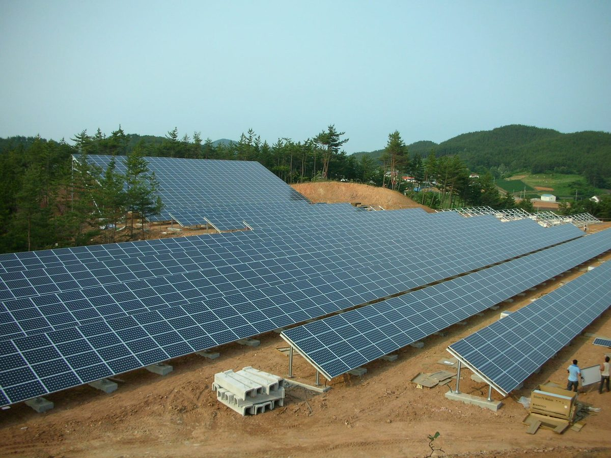

태양광 이격거리 상위법 시행 한 달…기초지자체 129곳 중 조례 고친 곳 7곳뿐, 9곳은 옛 기준으로 허가

기후솔루션 전수조사, 118곳(91.5%)에 법이 허용하지 않는 조항 남아…장흥은 국도 1,000m 도로 이격 유지, 10곳은 조례 정비 전이라도 법 기준 적용
지자체가 태양광 이격거리를 제멋대로 정하지 못하게 한 개정 재생에너지법이 시행된 지 한 달이 지났지만, 이격거리 규제를 운영해 온 기초지자체 129곳 가운데 10월 16일까지 조례 개정을 마친 곳은 7곳(약 5.4%)에 그쳤다. 9월 18일 시행된 개정법 제27조의3과 시행령에 따라 태양광 이격거리는 주택 5호 이상이 모인 곳에서 최대 200m 안에서만 둘 수 있고, 도로를 기준으로 한 이격은 아예 둘 수 없다. 기후솔루션이 129곳의 조례·규칙·지침을 전수조사하고 국민신문고로 받은 114곳의 답변을 분석한 결과, 보은·증평·홍성·순창·김제·장흥·진도·부안·진안 9곳은 법 시행 뒤에도 옛 조례 기준을 적용한다고 답했고, 장흥군은 고속도로·국도 1,000m, 지방도·군도 500m의 도로 이격을 그대로 쓰며 김제시는 조례 개정 시점을 2027년으로 잡았다. 반면 이천·포천·경산·함안 등 10곳은 조례를 고치기 전이라도 상위법에 어긋나는 규정은 적용하지 않겠다고 밝혀, 같은 법을 두고 지역마다 허가 기준이 갈렸다. 조사 대상 가운데 118곳(91.5%)에는 법이 허용하지 않는 조항이 하나 이상 남아 있고 이 중 75곳은 입법예고 같은 개정 절차조차 확인되지 않았으며, 개정을 마쳤다는 남원시 조례에도 도로 300m 이격 규정이 남아 있었다. 기후솔루션은 정부에 조례 정비 전 적용할 허가 기준을 유권해석으로 분명히 하고 지자체별 정비 현황을 공개하라고 요구했다.
시민에너지 관점
129곳 가운데 7곳만 조례를 고쳤다는 것은 법이 바뀌어도 현장의 허가 창구는 그대로라는 뜻이다. 이격거리를 풀면 외지 사업자의 발전소가 마을 곁에 마구 들어선다는 주민 걱정도 가볍지 않지만, 답은 옛 조례로 버티는 것이 아니라 마을이 직접 발전소의 주인이 되는 길을 넓히는 데 있다. 최근 아산시의회 상임위를 통과한 개정안처럼 세대주 80% 이상이 동의한 마을 태양광과 햇빛소득마을을 이격거리 예외로 두는 방식은, 허가의 기준을 거리에서 주민 참여와 소유로 옮기는 시도로 보인다. 정부는 조례 정비 현황을 공개하고 시정을 요구하는 한편, 주민이 소유하는 발전소부터 허가 문턱을 낮춰야 한다.
출처: 에너지프로슈머 2026-10-23 차길업 원문 보기
太陽光の離隔距離、上位法施行から1か月…基礎自治体129か所のうち条例を改めたのは7か所だけ、9か所は旧基準で許可
気候ソリューションの全数調査、118か所（91.5%）に法が認めない条項が残る…長興は国道1,000mの道路離隔を維持、10か所は条例整備前でも法の基準を適用
自治体が太陽光の離隔距離を勝手に定められないようにした改正再生可能エネルギー法の施行から1か月が過ぎたが、離隔距離規制を運用してきた基礎自治体129か所のうち、10月16日までに条例改正を終えたのは7か所（約5.4%）にとどまった。9月18日に施行された改正法第27条の3と施行令により、太陽光の離隔距離は住宅5戸以上が集まる場所から最大200mの範囲でしか設けられず、道路を基準とする離隔は一切設けられない。気候ソリューション（Solutions for Our Climate）が129か所の条例・規則・指針を全数調査し、国民申聞鼓（オンライン請願窓口）を通じて得た114か所の回答を分析したところ、報恩・曽坪・洪城・淳昌・金堤・長興・珍島・扶安・鎮安の9か所は法施行後も旧条例の基準を適用すると答えた。長興郡は高速道路・国道1,000m、地方道・郡道500mの道路離隔をそのまま使い、金堤市は条例改正の時期を2027年としている。一方、利川・抱川・慶山・咸安など10か所は、条例を改める前でも上位法に反する規定は適用しないと表明し、同じ法をめぐって地域ごとに許可基準が分かれた。調査対象のうち118か所（91.5%）には法が認めない条項が一つ以上残り、うち75か所は立法予告などの改正手続きすら確認できず、改正を終えたとする南原市の条例にも道路300mの離隔規定が残っていた。気候ソリューションは政府に対し、条例整備前に適用する許可基準を有権解釈で明確にし、自治体ごとの整備状況を公開するよう求めた。
市民エネルギーの視点
129か所のうち7か所しか条例を改めていないということは、法が変わっても現場の許可窓口は元のままだということだ。離隔距離を緩めれば外部事業者の発電所が村のそばに次々と建つという住民の心配も軽くはないが、答えは旧条例で踏みとどまることではなく、村自らが発電所の持ち主になる道を広げることにある。最近、牙山市議会の常任委員会を通過した改正案のように、世帯主80%以上が同意した村の太陽光や太陽光所得村を離隔距離の例外とする方式は、許可の基準を距離から住民の参加と所有へ移す試みとみられる。政府は条例整備の状況を公開して是正を求めるとともに、住民が所有する発電所から許可のハードルを下げるべきだ。
出典: Energy Prosumer 2026-10-23 Cha Gil-eop 原文を読む
太阳能间距新法实施一个月…129个基层地方政府中仅7个修改条例，9个仍按旧标准审批
气候解决方案全面调查显示，118个（91.5%）仍留有法律不允许的条款…长兴维持国道1,000米道路间距，10个地方在条例修订前也按法律标准执行
禁止地方政府随意设定太阳能间距的韩国《可再生能源法》修正案已实施一个月，但在一直实行间距管制的129个基层地方政府中，截至10月16日完成条例修订的只有7个（约5.4%）。根据9月18日实施的修正法第27条之3及其施行令，太阳能设施只能在距5户以上住宅聚集地最多200米的范围内设定间距，而且完全不得以道路为基准设定间距。气候解决方案（Solutions for Our Climate）全面调查了这129个地方的条例、规则和指南，并分析了通过国民申闻鼓（在线请愿平台）收到的114份答复，结果显示报恩、曾坪、洪城、淳昌、金堤、长兴、珍岛、扶安、镇安9个地方表示，新法实施后仍沿用旧条例标准；长兴郡继续执行高速公路和国道1,000米、地方道和郡道500米的道路间距，金堤市则把条例修订时间定在2027年。与此相反，利川、抱川、庆山、咸安等10个地方表示，即使条例尚未修订，也不再适用违反上位法的规定，同一部法律在各地形成了不同的审批标准。调查对象中有118个（91.5%）仍留有至少一项法律不允许的条款，其中75个连立法预告等修订程序都未见启动；自称已完成修订的南原市条例中也仍保留着道路300米的间距规定。气候解决方案要求政府通过官方法律解释明确条例修订前适用的审批标准，并公开各地条例整顿情况。
市民能源视角
129个地方中只有7个修改了条例，说明法律虽然变了，基层审批窗口却依然如故。居民担心放宽间距后外地开发商的电站会在村旁蜂拥而建，这种担忧不容忽视，但答案不是靠旧条例硬撑，而是拓宽让村庄亲自成为电站主人的道路。最近通过牙山市议会常任委员会的修正案，把户主80%以上同意的村庄太阳能和阳光收入村列为间距例外，这可以看作是把审批标准从距离转向居民参与和所有权的尝试。政府应公开条例整顿情况并要求纠正，同时首先为居民所有的电站降低审批门槛。
来源: Energy Prosumer 2026-10-23 Cha Gil-eop 查看原文
A month after Korea's new solar setback law took effect, only 7 of 129 local governments have revised their ordinances and 9 still permit under old rules
Solutions for Our Climate survey finds 118 (91.5%) still carry provisions the law does not allow; Jangheung keeps a 1,000m road setback for national roads, while 10 apply the law even before revising
A month after an amended Renewable Energy Act took effect to stop local governments from setting solar setback distances as they please, only 7 (about 5.4%) of the 129 local governments that had setback rules finished revising their ordinances by October 16. Under Article 27-3 of the amended law and its enforcement decree, in force since September 18, solar setbacks may apply only within a maximum of 200m from places where five or more homes are clustered, and setbacks measured from roads are not allowed at all. Solutions for Our Climate surveyed the ordinances, rules and guidelines of all 129 and analysed 114 replies obtained through the government's online petition portal. Nine of them — Boeun, Jeungpyeong, Hongseong, Sunchang, Gimje, Jangheung, Jindo, Buan and Jinan — said they still apply their old ordinances after the law took effect; Jangheung County keeps road setbacks of 1,000m from expressways and national roads and 500m from local and county roads, and Gimje plans to revise its ordinance in 2027. By contrast, 10 including Icheon, Pocheon, Gyeongsan and Haman said they would not apply provisions that conflict with the law even before revising, leaving permit standards split from place to place under the same law. Of those surveyed, 118 (91.5%) still have at least one provision the law does not allow, 75 of them show no sign of even starting revision procedures such as a legislative notice, and Namwon, which said it had finished revising, still keeps a 300m road setback. Solutions for Our Climate called on the government to issue a clear official interpretation of which permit standards apply before ordinances are revised and to publish each local government's progress.
Citizen Energy View
That only 7 of 129 have revised their ordinances means the law has changed but the permit desk on the ground has not. Residents' fears that easing setbacks will let outside developers crowd power plants next to their villages are real, but the answer is not to cling to old ordinances; it is to widen the path for villages to own the plants themselves. Exemptions like those in an amendment recently passed by an Asan City Council committee, which spare village solar backed by at least 80% of household heads and Sunlight Income Villages from setbacks, appear to shift the test for permits from distance to resident participation and ownership. The government should publish ordinance progress and demand corrections, and lower the permit bar first for plants that residents own.
Source: Energy Prosumer 2026-10-23 Cha Gil-eop Read the original